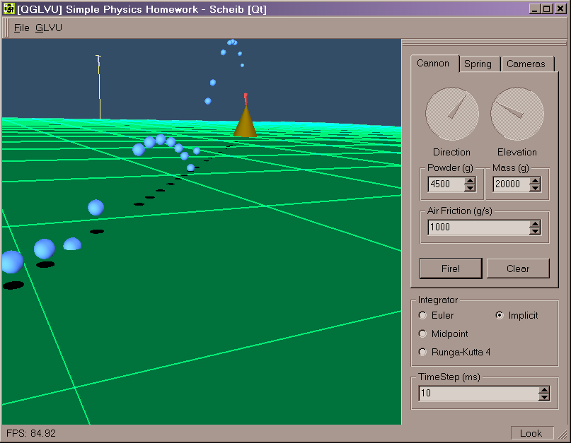

| Homework1: ODE & Particle Dynamics
Summary:
Implement a small program to simulate particle
dynamics (a cannon shooting and a mass on a spring). Use several numerical
integration methods.
Assignment text:
| Due on Wednesday, Feb 13, 2002
(10pt) Problem A: Ballistic Motion
Given a location of a gun at (0,0,0), write an 3D artillery
simulator that can take in the mass of the projectile, amount of powder,
the azimuth and elevation of the gun barrel. Use the amount of powder and
the mass of the projectile to determine the muzzle velocity. Account for
gravity and air friction. Assume that one kilogram of powder produces 10,000
newtons of force. Assume instantaneous acceleration as a result of the
powder going off. Air friction coefficient is constant. Set it to be 50
kg/s initially. The gun and target are both on the X-Z plane.
(15pt) Problem B: Spring-Mass Simulator
A spring hands vertically in its equilibrium or resting
position. Given a user-defined mass m attached to the spring with the spring
constant k, not stretched at first. Simulate the motion of the spring and
mass under the effects of spring and gravitational forces. Assume the mass
is 5 kg and k = 15 kg/s^2. Then, set the mass to be 10 kg and k = 20 kg/s^2.
For both problems, you'll need to write at least two functions
(Euler's method vs. Mid-point or 4th order Runge-Kutta) for integration
and compare their numerical accuracy and stability. Which function is more
accurate? Which one is more stable? Which one is more efficient?
This assignment will be graded based upon:
Correctness of the implementations (50%)
UI & other SE factors (30%)
Other features (analysis, etc.) (20%) |
What I did:
I have created a small program.
download
the program (you need to put qt-mt230nc.dll
in the same directory)
It requires Windows (2000?), openGL, GLVU
(to compile), and the QT runtime dll (included).
You can view the source
code. All the simulation code is contained in the main.cpp. The other
files are used for the user interface.
I have implemented the following integration
methods:
-
Euler
-
x(t+dt) = x(t) + v(t)*dt
-
v(t+dt) = v(t) + a(t)*dt
-
Midpoint
-
x_k1 = v(t)*dt
-
v_k1 = a(t)*dt
-
-
x_k2 = (x(t)+.5*x_k1)*dt
-
v_k2 = (v(t)+.5*v_k1)*dt
-
-
x(t+dt) = x(t) + x_k2
-
v(t+dt) = v(t) + v_k2
-
Runga-Kutta Fourth Order (RK4)
-
x_k1 = v(t)*dt
-
v_k1 = a(t)*dt
-
-
x_k2 = (x(t)+.5*x_k1)*dt
-
v_k2 = (v(t)+.5*v_k1)*dt
-
-
x_k3 = (x(t)+.5*x_k2)*dt
-
v_k3 = (v(t)+.5*v_k2)*dt
-
-
x_k4 = (x(t)+x_k3)*dt
-
v_k4 = (v(t)+v_k3)*dt
-
-
x(t+dt) = x(t) + x_k1*1/6 + x_k2*1/3 + x_k3*1/3
+ x_k4*1/6
-
v(t+dt) = v(t) + v_k1*1/6 + v_k2*1/3 + v_k3*1/3
+ v_k4*1/6
-
Implicit (backwards Euler)
-
For cannon balls:
-
v(t+dt) = (v(t)+dt*gravity)/(1+dt*WindResistance/BallMass)
-
x(t+dt) = x + dt*v(t+dt)
-
For spring mass:
-
v(t+dt) = (v(t)-dt*SpringConstant/Mass*x(t)+dt*gravity)
/ (1+dt*dt*SpringConstant/SpringMassMass)
-
x(t+dt) = x + dt*v(t+dt)
The user interface alloes very easy manipulation
of simulation variables and camera view points.

I found that all integration methods worked
similarly for small time steps (10ms). The hanging spring performed poorly
for large time steps (50ms, 100ms) with Euler and Midpoint. The mass on
the spring would gain energy and "explode". RK4 performed well, but still
gained energy.
The implicit solver removes energy from
the system slowly, however it is far more stable. Shots from the cannon
do not go as far, and the spring mass dampens out and will eventually stop
moving. These effects are slight, but become more apparent at very large
time steps (100ms or more).
|